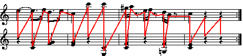
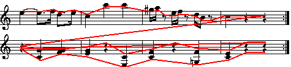
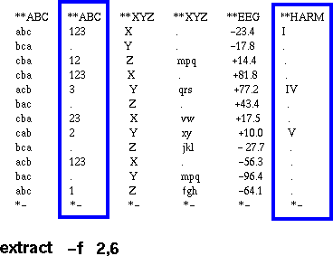
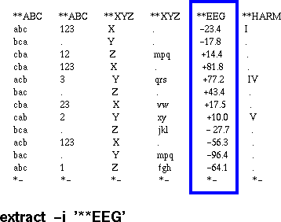
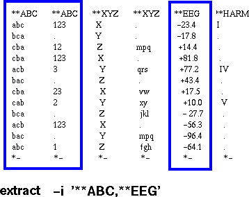
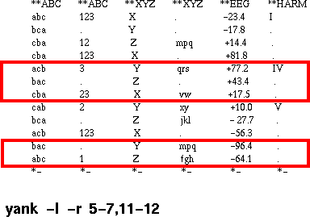

The Humdrum Toolkit: Unix-based Tools for Music Research
Music Cognition Group
Ohio State University
PROBLEM
How does one design software that enhances research productivity in music?
DESIGN APPROACH
-
machine-like software vs tool-like software
-
design machine-like software when problem area is well-defined
-
design tool-like software when problem area not well-defined
-
design machine-like software when problem area is well-defined
- music scholarship not well-defined -- hence need for software tools
MUSIC REPRESENTATION
-
representation (a venerable if uninteresting problem)

Structure Problem
-
traditional approach: raster scan
either vertical:

E5 E5 G4 C4 F5 D5 F4 G4 E5 C5 G4 E4 C6 C6 C4 E3 G#5 F4 C4 A5 E5 F5 etc.
or horizontal:

E5 E5 F5 D5 E5 C5 C6 C6 G#5 A5 E5 F5 D5 B4 C4 G4 G4 G4 C4 F4 F4 E4 etc.
-
Humdrum approach: 2D format
E5 E5 F5 D5 E5 C5 C6 C6 G#5 A5 E5 F5 D5 B4 C5 . G4 . G4 . G4 . C4 F4 . . . F4 . E4 . C4 . F4 . E4 . E3 C4 . . . G4 . C4
Structure Solution
Use 2D representation structure to facilitate data manipulation.
Semiotic Problem
What do we represent?ANSWER: ... yes, all of them
- notated pitch?
- concert pitch?
- relative pitch?
- fundamental frequency?
- cents?
- interval?
- scale degrees?
- MIDI?
- visual appearance in score? ("orthography")
Semiotic Solution
Provide a means for representing whatever the user wants to represent.
HOW DO WE LET USER'S REPRESENT ANYTHING?
-
Humdrum "interpretations". E.g.
**pitch **intervals **scale **Korean **anything C4 . DO tae abc A4 +M6 LA hwang %G&() F4 -M3 FA chung 34.5 E4 -m2 MI nam Q@-7
HOW DO WE MANIPULATE SUCH REPRESENTATIONS?
| Two kinds of tools: |
| 1. Tools that manipulate any representation conforming to the Humdrum Syntax. |
| (Similar to grep, cat, sed, cut ...) |
| 2. Tools that translate or modify pre-defined representations. |
| E.g. pitch -> frequency -> cochlear coordinates -> solfg -> pitch -> semits |
WHAT REPRESENTATIONS ARE PRE-DEFINED?
- ANSI pitch, French solfege, German Tonhohe
- semitones, cents, MIDI
- critical bands, cochlear coordinates
- absolute time, relative time, duration, epoch
- tablatures: guitar, lute, banjo, sitar ...
EXAMPLES OF USER-DEFINED REPRESENTATIONS
- Gregorian Chant (Royal)
- Balinese Cipher Notation (von Hippel)
- Trumpet Biomechanics (Berec)
- Spectral content in orchestral scores (Smythe)
- Sensory Dissonance (Mashinter)
- Korean Court music (Nam)
- Cajun Button Accordion (DeWitt)
- many others ...
using grep: grep '6-.*4+' (augmented sixth chord) interval
- -extract and yank





TWO-DIMENSIONAL REGULAR EXPRESSIONS
Normal Regular Expressions:
| * | zero or more ... | ||
| + | one or more ... | ||
| ? | zero or one ... |
Multi-Record Regular Expressions:
| <tab>*\n | zero or more records ... | ||
| <tab>+\n | one or more records ... | ||
| <tab>?\n | zero or one records ... |
Examples of a multi-record regular expressions:
| ^[A-Z].*[A-Z]$<tab>+\n | one or one records beginning and ending with upper-case letters | ||
| ^X$ | followed by a single record containing just the letter X |
| B-<tab>+\n | |||
| A<tab>+\n | |||
| C<tab>+\n | |||
| H<tab>+\n |
HUMDRUM RESOURCES
-
Over 8000 encoded works:
- Translation routines from CCARH MuseData format.